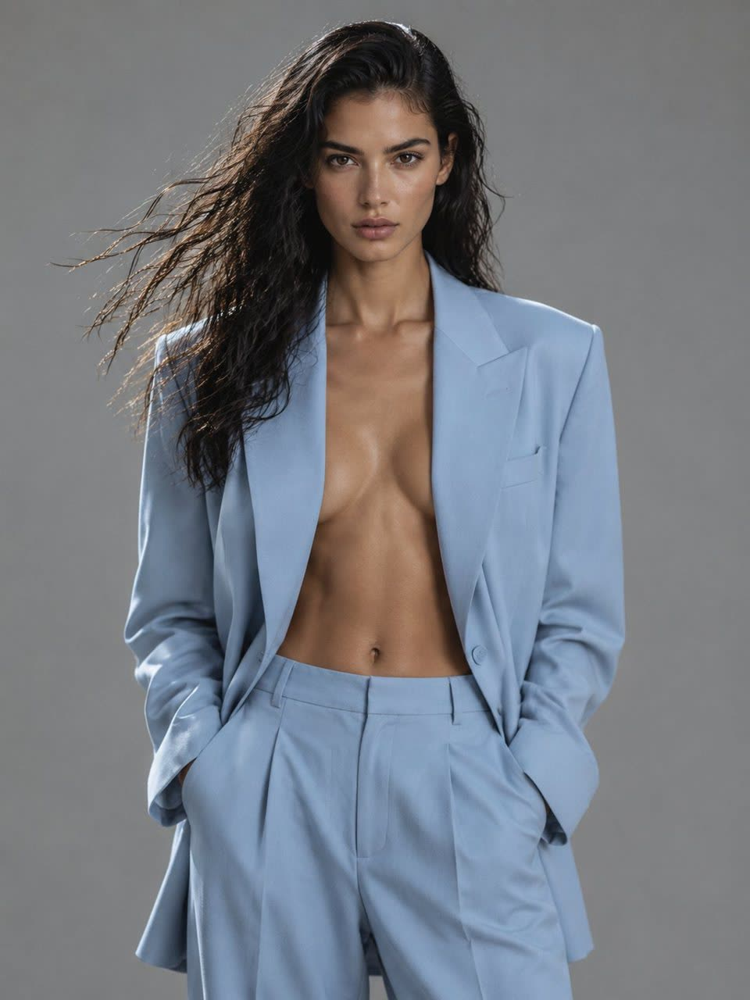

Oversized pastel suit, grey seamless
WRD-024Wardrobegpt-image-2.5 flareby Alex Zhang (@Alex_allinai)2026-09-29

Minimal styling, maximal presence: oversized pastel suit, hands in pockets, soft directional light.
Prompt
Minimal styling, maximal presence. The prompt was simple: oversized pastel suit, no shirt, hands in pockets, grey seamless, soft directional light. gpt-image-2.5-flare understood the assignment and kept the fabric texture and skin tone honest.
prompt is here:
{
"creative_style": "Clean, high-end fashion editorial photography with minimalist styling, soft directional studio lighting, and muted pastel color palette.",
"overall_theme": "Power dressing stripped back: an oversized tailored suit becomes the entire statement, worn with quiet confidence and no shirt underneath.",
"mood_vibe": "Confident, serene, powerful, understated luxury, editorial, modern femininity.",
"style_keywords": ["fashion editorial", "minimalist", "power suit", "pastel blue", "studio portrait", "high fashion", "oversized tailoring", "neutral background", "soft lighting", "wet hair", "androgynous elegance"],
"camera": { "angle": "Straight-on at chest height, slight upward tilt for presence", "lens": "85mm portrait lens", "aperture": "f/4", "depth_of_field": "Shallow enough to soften background" },
"color_grading": { "palette": "Powder blue, cool grey, warm skin tones, dark brown hair", "saturation": "Low to medium", "look": "High-end editorial print campaign with clean neutral grade" }
}
Try the model on NeoSpark: @neospark_HQ
Images + video on NeoSpark — gpt-image-2.5, Flare, Sunburst, Nano Banana, Midjourney, Seedance 2.0/2.5, Wan 3.0, MiniMax H3, Veo Omni.
#AIArt #GPTImage #NeoSpark #StudioPortrait #FashionAITags: tailoring, pastel, minimal